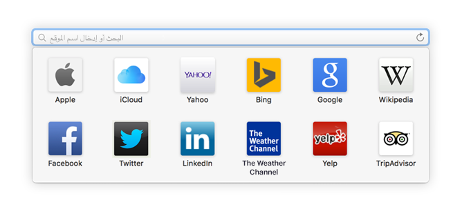
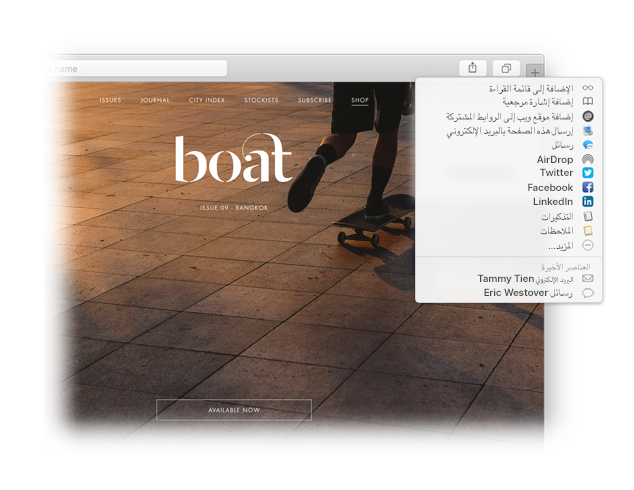

البحث عن مفضلة.
انقر على حقل البحث الذكي للوصول إلى مواقع الويب المفضلة لديك. انقر على موقع للانتقال إليه.

وضع دبوس على موقع.
قم بسحب علامة التبويب إلى اليسار لوضع دبوس على الموقع، وسيظل موضوعًا في شريط علامات التبويب.

مشاركة رابط.
انقر على  لإرسال الرابط في بريد إلكتروني أو رسالة نصية، مشاركته على فيسبوك أو تويتر، أو إضافته إلى الملاحظات.
لإرسال الرابط في بريد إلكتروني أو رسالة نصية، مشاركته على فيسبوك أو تويتر، أو إضافته إلى الملاحظات.